Introduction
In this project you will work with three sample portfolio pages. You can display finished versions of these pages by clicking the images below.
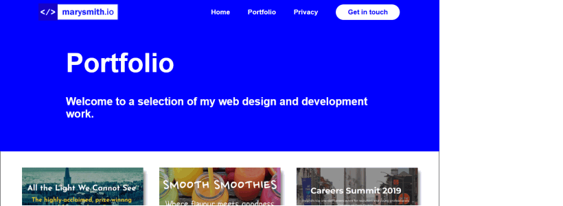
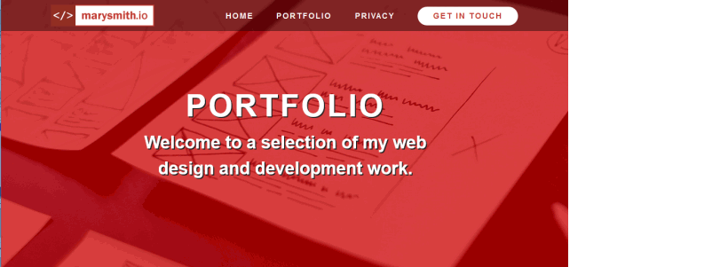
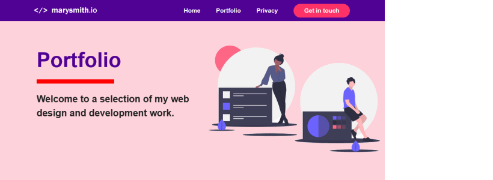
Create the project folders
Your first step is to create on your computer folders that will store the HTML files, CSS files, and image files needed for this project.
- If a folder named websites does not already exist on your computer, create it now.
- Inside the websites folder, create the following sub-folder:
C:\websites\portfolio
- Inside the portfolio sub-folder, create the following sub-sub-folders:
C:\websites\portfolio\assets
C:\websites\portfolio\assets\css
C:\websites\portfolio\assets\img
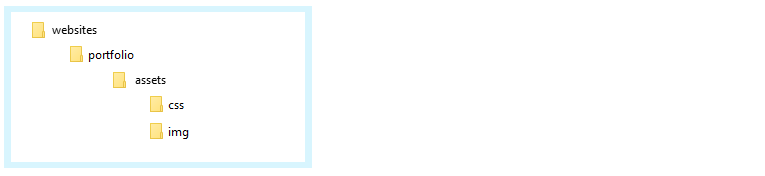
Download the three HTML files
Follow these steps to download the three HTML files to the portfolio folder you have created.
- Go to the first HTML file at this web address:
https://ibat-web-dev.github.io/portfolio/index-1.html
- Right-click anywhere on the page (except on an image) and choose View page source (Chrome or Mozilla Firefox).
- Right-click on the displayed text and choose Save as… (Chrome) or Save Page As… (Mozilla Firefox).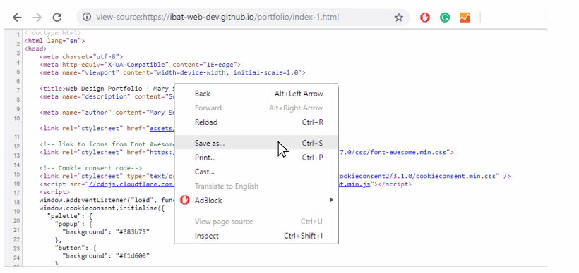
- In the File name: box, change the name of the file to index-1.html.
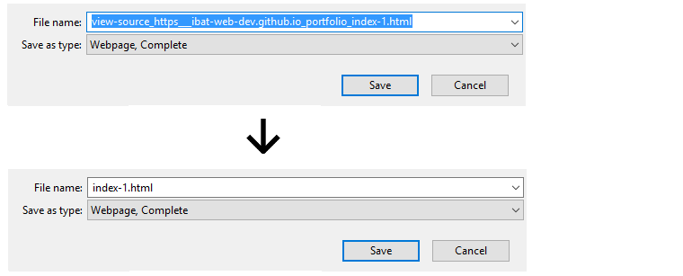
- In the Save as type: dropdown list, change from the default value Webpage, Complete to Web Page, HTML Only.
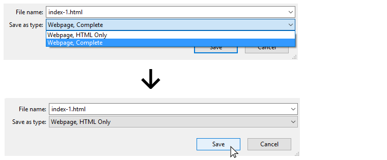
- Save the file as index-1.html file in your C:\websites\portfolio folder.
- Repeat these steps for the following two other HTML files:
https://ibat-web-dev.github.io/portfolio/index-2.html
https://ibat-web-dev.github.io/portfolio/index-3.html
You should now have three HTML files saved in your C:\websites\portfolio folder.
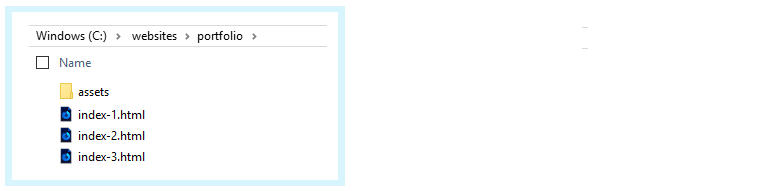
Download the three CSS files
You will now download the three CSS files to the C:\websites\portfolio\assets\css sub-folder.
- In your web browser, open the first CSS file at this web address:
https://ibat-web-dev.github.io/portfolio/assets/css/portfolio-1.css
- Right-click on the displayed CSS file and choose Save as… (Chrome) or Save Page As… (Mozilla Firefox).
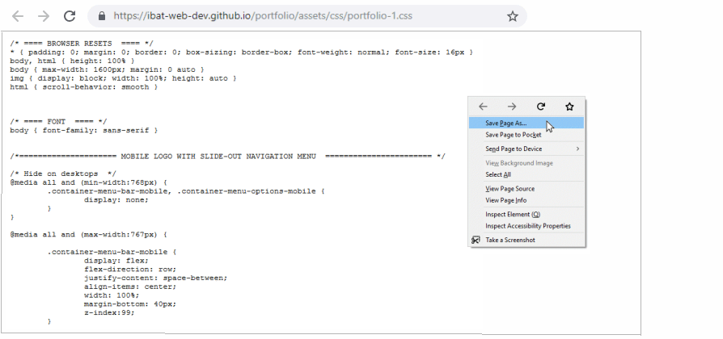
- Save the portfolio-1.css file in your C:\websites\portfolio\assets\css folder.
- Repeat these steps for the following two other CSS files:
https://ibat-web-dev.github.io/portfolio/assets/css/portfolio-2.css
https://ibat-web-dev.github.io/portfolio/assets/css/portfolio-3.css
You should now have three CSS files saved in your C:\websites\portfolio\assets\css sub-folder.
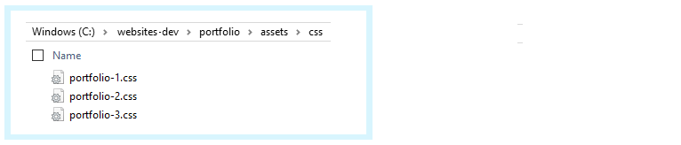
Customise your selected portfolio version
Review the three versions of the sample portfolio files in your web browser. On a Windows PC, the three files should be at the following locations:
file:///C:/websites/portfolio/index-1.html
file:///C:/websites/portfolio/index-3.html
file:///C:/websites/portfolio/index-3.html
Which one of the three sample portfolio versions is closest to the one you would like for your own website?
Follow the steps below to customise it according to your requirements.
- In your text editor, open your favourite one of these three HTML files:
index-1.html
index-2.html
index-3.html
- For the HTML file you have selected and opened, save it with this new name:
index.html
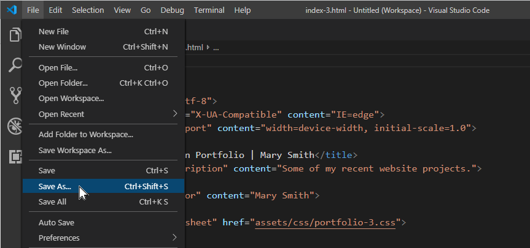
- Open the corresponding stylesheet for the selected HTML in the assets/css sub-folder, and save it with this new name:
portfolio.css
- In the <head> section of the index.html file, link this file to the stylesheet named portfolio.css.
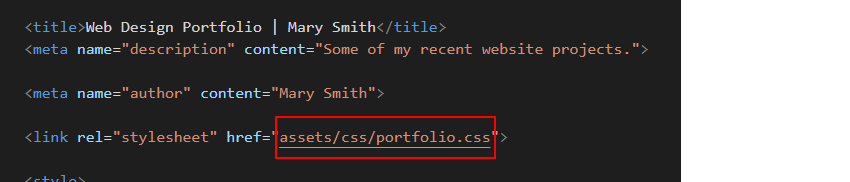
- Also in the <head> section, you can remove the 'note' style.
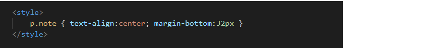
- Neat the top of the <body> section, you can remove the text that includes links to alternative versions of the portfolio webpage.
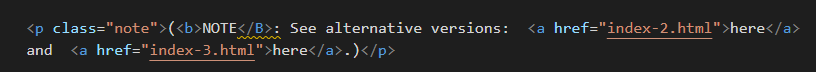
- You can now work with the portfolio.html and portoflio.css files without affecting the sample files you have downloaded.
- Make any changes you require to the text and images in the index.html file, and to the styles in the portfolio.css stylesheet file. Save both files when finished.
You can ignore the three HTML and three CSS files you downloaded.
Review the Font Awesome 4 icon stylesheet
In the <head> of your privacy.html web page, under the link to the privacy.css stylesheet, is the link to another stylesheet: the CSS file for the Font Awesome icon collection. You need not make any changes to this.

This CSS file is required to create the icons in the footer of the privacy.html web page.
You can see a full list of Font Awesome icons at the web address below:
You can find some guidance on using Font Awesome icons below:
As with any Google Fonts you may use in your web pages, the Font Awesome icons will display on your computer only when you are connected to the Internet.
Update the Google Analytics ID
Near the top of your HTML file, just before the closing </head> tag, you can see a sample Google Analytics Tracking Code.

Each Google Tracking Code has a unique ID in its first and last line. Replace the sample Google Tracking ID with your own Google Tracking ID. The instructions for viewing your website’s unique Google Tracking ID are here.
When finished, save the index.html file.
Adding the privacy pop-up code and message
Your need to add the ‘pop-up‘ privacy code and message to your web page. You can find the instructions for generating this code here.
- CSS link: Paste this anywhere in the <head> of the web page. For example, just before the closing </head> tag.
<link type="text/css" content="https://cdn.jsdelivr.net/npm/cookieconsent@3/build/cookieconsent.min.css">
</head>
<body>
- JavaScript code: Paste at the end of the web page, just before the closing </body> tag.
<script src="https://cdn.jsdelivr.net/npm/cookieconsent@3/build/cookieconsent.min.js" data-cfasync="false"></script>
<script>
window.cookieconsent.initialise({
"palette": {
"popup": {
"background": "#000"
},
"button": {
"background": "#f1d600"
}
},
"content": {
"href": "https://username.github.io/privacy.html"
}
});
</script>
</body>
</html>
Near the end of this code is the sample web address of https://username.github.io/privacy.html.
Change this to the web address of the privacy page on your own website.
Uploading your project to GitHub
The final step is to upload your project to GitHub.
All the files for this project are in a sub-folder named portfolio of your websites folder. So you will need to upload this portfolio sub-folder, which contains both files and other sub-folders, to your account on GitHub.
However, GitHub will not allow you to upload only a folder (such as portfolio) from your computer.
For this reason, you need to upload a file along with your portfolio folder. It can be any file. Follow these steps.
- Sign in to your account at GitHub.com.
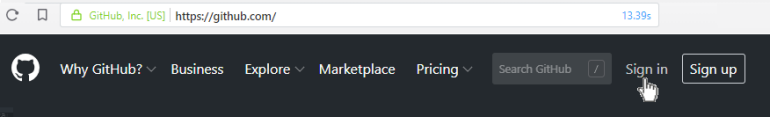
- On your GitHub home page, click the name of the repository that holds your web pages. Its name will look as follows, where username is your chosen username on GitHub.
username.github.io

- On the next screen displayed, near the centre of the screen, click the Upload files button.

- On your computer, display your websites folder. You should see that it contains the sub-folder named portfolio.
- On a Windows computer, click on the portfolio folder to select it.
Next, press and hold down the CTRL key, and then click on any file in your websites folder to select it.
- On an Apple Mac, press and hold down the COMMAND key, and then click on the portfolio folder and any file in your websites folder.
- Drag-and-drop the portfolio folder and whatever file you have selected to upload them to your GitHub account. In the example below, the file selected along with the portfolio folder is named base-0.html.
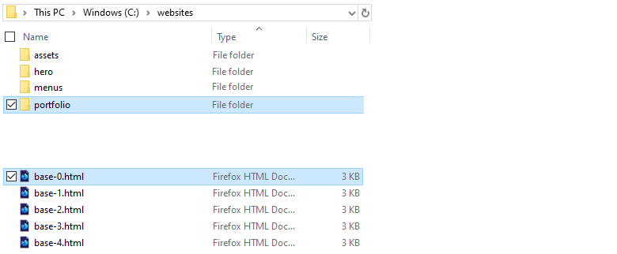
You do not need to select this particular file. You can use any file. But you cannot upload the portfolio folder (or any other folder) on its own.
- After uploading the portfolio folder and your selected file, scroll down to the bottom of the GitHub screen, enter a short message in the Commit changes box, click the Commit changes button, and wait for the upload to complete.

- Your main repository screen should now contain a folder named portfolio. Click on this folder.
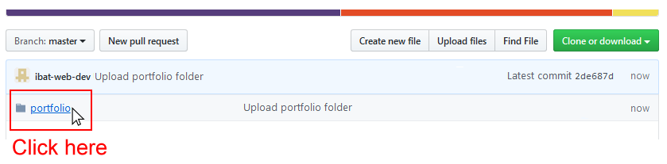
- The portfolio folder should contain four HTML files and the assets sub-folder.
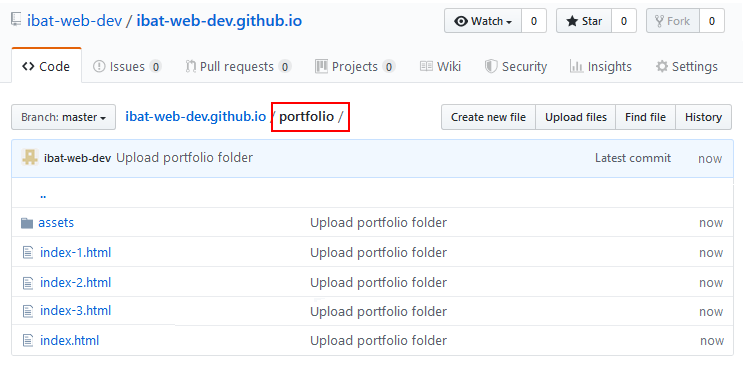
- Click on the assets sub-folder to view its contents. You should see that it contains the two sub-folders named css and img.
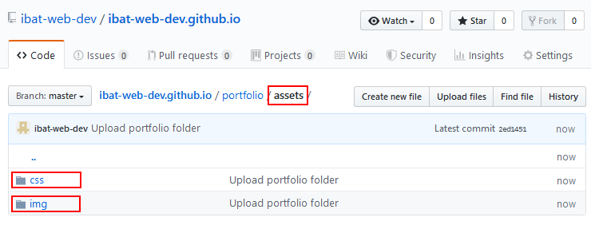
- Within the assets sub-folder, click on the css sub-folder. Check that it contains the four stylesheet files.
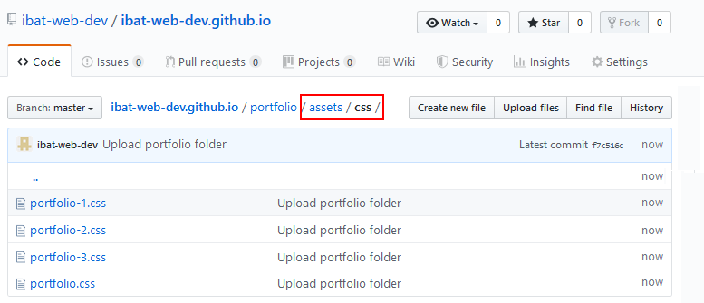
- Within the assets sub-folder, click on the img sub-folder. Check that it contains all the image files.
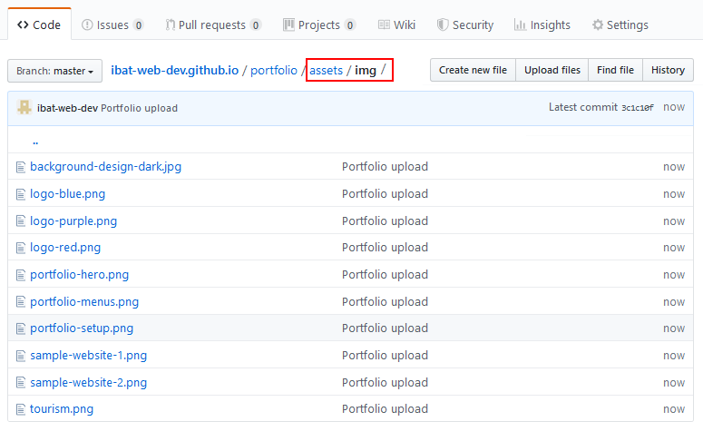
Your web page will display correctly online only when:
- All the required files are uploaded to GitHub.
- All the files are present in their correct folders and sub-folders on GitHub.
Your web page is now published on GitHub at a web address similar to the following, where username is the username you have chosen for your GitHub account:
https://username.github.io/portfolio/index.html
or, simply:
https://username.github.io/portfolio
It may take a few minutes for your uploaded files to appear on GitHub.
Return to Contents.


 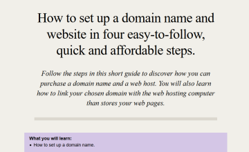
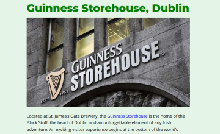
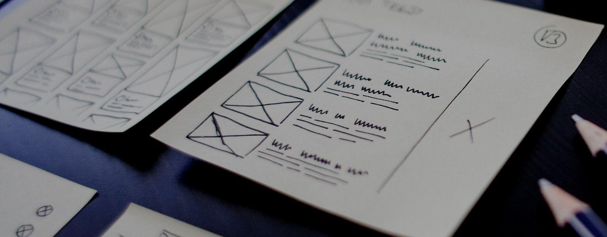
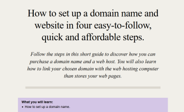
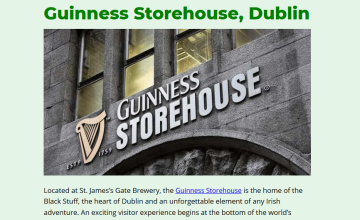
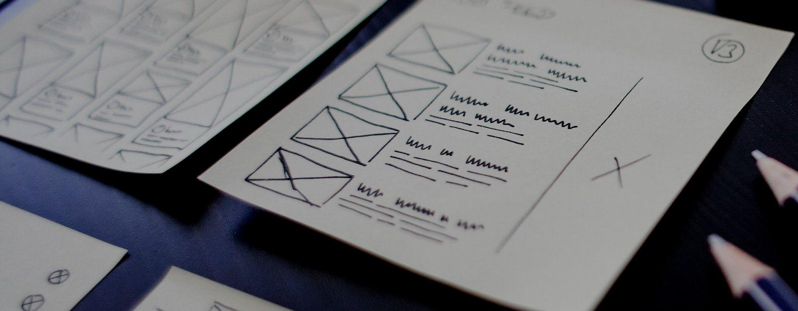